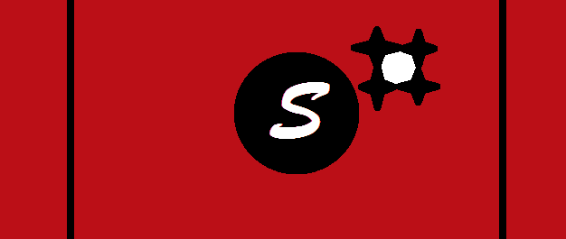

8 FATOS SOBRE A CASA DE SVÉRKÈR
-
A casa de Svérkèr localiza-se em uma ilha isolada no continente de Urur em um local conhecido como Extraterra;
-
Em caso de guerra, a bandeira da casa troca suas cores pelas suas reversas;
-
Quatro são as sub-regiões que dividem Svérkèr, sendo essas:
- A escrita Svérkèr é extremamente parecida com o manuscrito, diferenciando-se na entonação e assentuação;
- O calendáro de Svérkèr se divide em 4 meses(Quaaa,Quaab,Quaac,Quaad) cada um totalizando 20 dias exatos. E assim como no plano terreno, os anos possuem números, em Svérkèr, os anos possuem nomes, caso a terminação numérica seja par, o ano é chamado Galakdard(o ano dos fracos), caso seja impar Galaknard(o ano dos fortes);
- Como já citado anteriormente, Schyla deseja se separar da casa de Svérkèr, e isso quase aconteceu, porém o lider da revolução (Sede Terinat) era nascido em um ano Galakdard (para muitos quem nasce nesse tipo de ano, é considerado demente e/ou louco), sendo assim a revolução foi desconsiderada (uma boa jogada do rei);
- Svérkèr já foi uma república...por dois minutos.
- Para finalizar, deve-se dizer o principal fato da casa de Svérkèr. Todos são livres para expressarem seu pensamento, desde que não venha a ferir outro indivíduo.
Em paz:
Em guerra:
O Dacondo:
Uma sub-região feita para o lazer e o relento de pessoas frustradas. Com diversidade tanto em fauna quanto flora,
a pequena Dacondo se mostra como um "paraiso Iliánico" onde todos são bem-vindos.
Caso você seja uma pessoa fanática por guerras e/ou um sanguinário nato, pedimos carinhosamente para que evite esta
região, pois o Asphodel não deseja ter que limpar halflings do chão novamente.
O Osgehamde:

Considera-se um amante das artes, matemática ou línguas? Recomendo que estabilize seu reino na pequena e pacata
Osgehamde. Por mais difícil que seja de pronunciar seu nome, as pessoas nesta região são como mineiros. Acolhem tudo
e todos, são bastante hospitaleiros e amigáveis.
Jamais venha para esta região se for uma pessoa amarga e/ou pessimista, disso, queremos distância.
O Lus:

"A guerra faz o homem, o homem faz o futuro". Esta é uma frase de um grande guerreiro Lusitano, seu nome era Diu e sua
profissão...AAAAAAHHHHHHHHHHHHUUUUUUUU!!!
Lus é conhecido como a região da guerra, para você ter uma noção, nesta região, seus moradores não dizem "oi", mas sim
"Ahu"(quando perguntarem sua profissão, sempre responda "AHU").Como já deu pra perceber, Lus não é para os francos, por isso,
caso tenha a bexiga frouxa, nem tente vir.
A Schyla:
A mais perfeita e cobiçada. Não existe definição melhor para minha terra natal!!!
Schyla é a mais perfeita sub-região, porém é extremamente explorada e subordinada por terceiros. Caracteriza-se
principalmente pelo minério, o combate e a culinária. Devido a insubordinção de outras sub-regiões, Schyla deseja se
separar, mas a constituição não permite, não obstante, combates separatistas já vem sendo travados desde o começo do
ano Galaknard, tornando-se tão sério que até bandeira Schyla já possui: